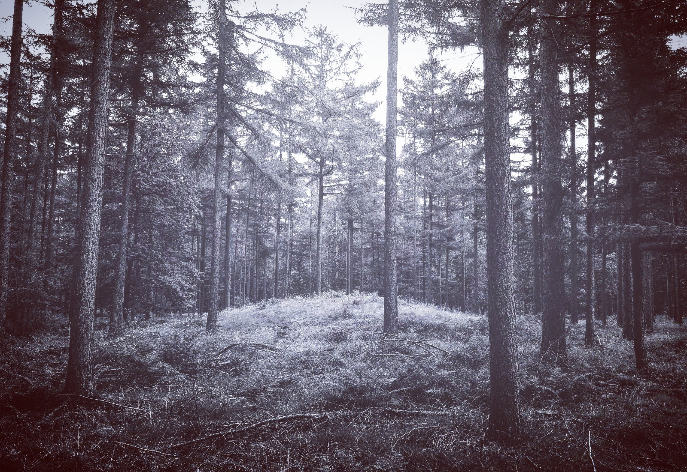

Een oud pad naar een verborgen plek. Een onopvallende verhoging tussen de bomen. Zacht
klinken stemmen tussen de stammen. Een gezongen elegie voor een vergeten held bij één van de prehistorische
grafheuvels in het bos.
"Tumulus", een muzikale vertelling geschreven en gecomponeerd door Frank Irving,
uitgevoerd door Kamerkoor Arachne en Sophie Burgers op theaterfestival Vuurol 20-21 mei 2018, Lage Vuursche.